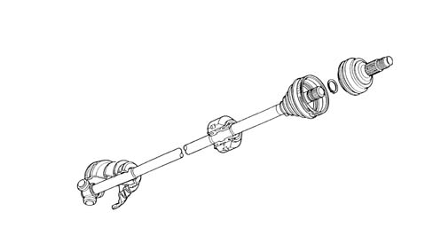

Introduction - AXLE
- Path
- Descriptions > 27 AXLE > Introduction - AXLE
- Kind
- system description
- Applies to
- all engines; all production periods
- Interactive page
- https://sloeber94.github.io/elrnDB-lYpsln/en/#/2429847
Applies to: all engines; all production periods
The driveshafts, the constant velocity joints and the intermediate shaft which make up the 'transmission' assembly transmit the movement of the gearbox to the drive wheels.
Applies to: all engines; all production periods
DRIVESHAFTS
The power is transmitted through driveshafts with wheel side constant velocity joints and gearbox side three-lobe joints housed in the differential side hubs.
The right driveshaft is fitted with a vibration damping mass which, in the case of dismantling, should be replaced in the correct position.
